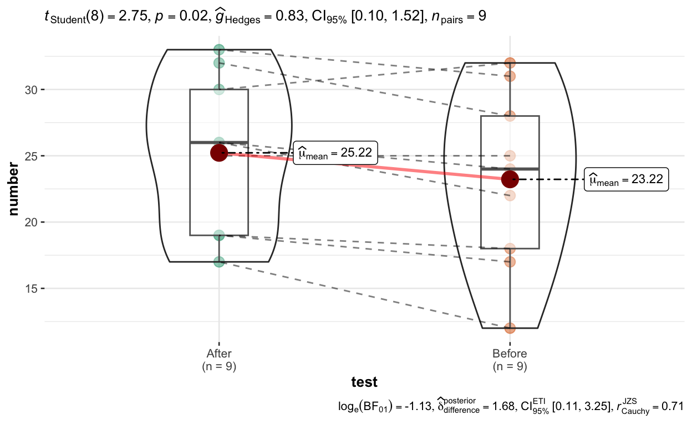
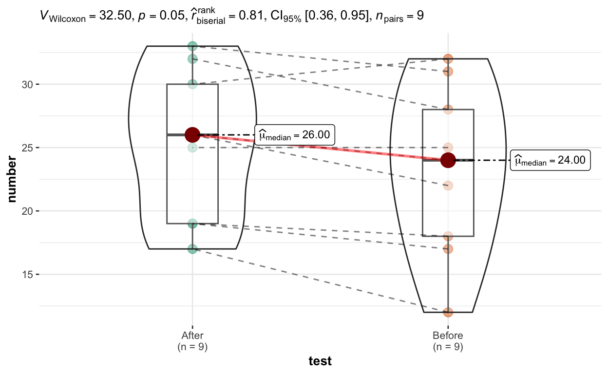
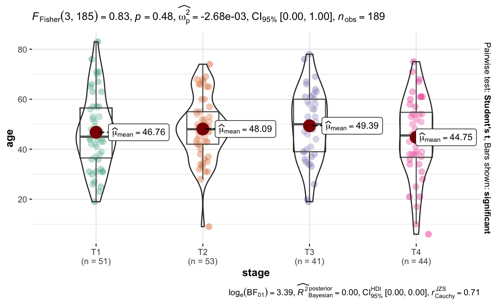
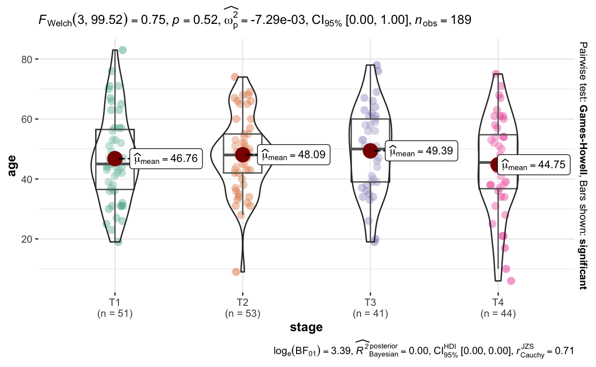

This post as a video (in making)
I recommend to watch a video first, because I highlight things I talk about. It’s less then … minutes long.
Why do we need {gtsummary}
The tables of data, different statistical tests and model results, we see in published scientific paper are beautifully formatted. But the road from data to such tables is often bumpy, has numerous steps and is prone to mistakes. Well, with {gtsummary} package you’ll get these results in a few lines of code. So, let’s get into it and start with data!
1. Summarize data
tbl_summary()
The tbl_summary() function:
- automatically recognizes continuous, categorical, and dichotomous (/daɪˈkɑːt.ə.məs/) variables in your data,
- calculates appropriate descriptive statistics, like counts and percentages for categorical, and Median + IQR for numeric variables
- includes the amount of missing values in each variable and
- automatically creates footnotes with explanations and abbreviations.
# install.packages("gtsummary")
library(gtsummary)
d <- trial %>% select(trt, age, grade, response)
tbl_summary(d)| Characteristic | N = 2001 |
|---|---|
| Chemotherapy Treatment | |
| Drug A | 98 (49%) |
| Drug B | 102 (51%) |
| Age | 47 (38, 57) |
| Unknown | 11 |
| Grade | |
| I | 68 (34%) |
| II | 68 (34%) |
| III | 64 (32%) |
| Tumor Response | 61 (32%) |
| Unknown | 7 |
| 1 n (%); Median (IQR) | |
“by” argument
However, most of the time we need to get descriptive stats for some groups, for example for Drug A and Drug B from the Treatment variable, which can be easily done by using “by” argument.
tbl_summary(d, by = trt)| Characteristic | Drug A, N = 981 | Drug B, N = 1021 |
|---|---|---|
| Age | 46 (37, 59) | 48 (39, 56) |
| Unknown | 7 | 4 |
| Grade | ||
| I | 35 (36%) | 33 (32%) |
| II | 32 (33%) | 36 (35%) |
| III | 31 (32%) | 33 (32%) |
| Tumor Response | 28 (29%) | 33 (34%) |
| Unknown | 3 | 4 |
| 1 Median (IQR); n (%) | ||
Stratified {gtsummary} tables with tbl_strata()
And if we need to go even further and calculate descriptive stats for Different Drugs inside of different Grade Levels, we can create a stratified table by using tbl_summary() function inside of tbl_strata() function, where we also specify “strata” argument.
# minimalist example
d %>%
tbl_strata(
strata = grade,
~.x %>%
tbl_summary(by = trt))| Characteristic | I | II | III | |||
|---|---|---|---|---|---|---|
| Drug A, N = 351 | Drug B, N = 331 | Drug A, N = 321 | Drug B, N = 361 | Drug A, N = 311 | Drug B, N = 331 | |
| Age | 46 (36, 60) | 48 (42, 55) | 44 (31, 54) | 50 (43, 57) | 52 (42, 60) | 45 (36, 52) |
| Unknown | 2 | 0 | 2 | 4 | 3 | 0 |
| Tumor Response | 8 (23%) | 13 (41%) | 7 (23%) | 12 (36%) | 13 (43%) | 8 (24%) |
| Unknown | 0 | 1 | 2 | 3 | 1 | 0 |
| 1 Median (IQR); n (%) | ||||||
# advanced example
fancy_data_table <- trial %>%
select(trt, grade, age, stage) %>%
mutate(grade = paste("Grade", grade)) %>%
tbl_strata(
strata = grade,
~.x %>%
tbl_summary(by = trt, missing = "no") %>%
modify_header(all_stat_cols() ~ "**{level}**")
)
library(flextable)
fancy_data_table %>%
as_flex_table() %>%
save_as_image(path = "fancy_data_table.png")[1] "/Users/zablotski/Library/Mobile Documents/com~apple~CloudDocs/7. Hobby/programming and stats/yuzaR-Blog/_posts/2022-10-31-gtsummary/fancy_data_table.png"2. Summarize Statistical tests with p-values
1) pimp your table with add_*() functions
But while descriptive stats is fine, we often would rather compare some groups and see whether they significantly differ. And here is where the real magic of {gtsummary} starts. Namely, the add_p() function:
- automatically detects a variable type,
- applies correct statistical tests to check the difference between Treatment Drugs
- and displays p-values and names of Statistical Tests in the table
d %>%
tbl_summary(by = trt) %>%
add_p()| Characteristic | Drug A, N = 981 | Drug B, N = 1021 | p-value2 |
|---|---|---|---|
| Age | 46 (37, 59) | 48 (39, 56) | 0.7 |
| Unknown | 7 | 4 | |
| Grade | 0.9 | ||
| I | 35 (36%) | 33 (32%) | |
| II | 32 (33%) | 36 (35%) | |
| III | 31 (32%) | 33 (32%) | |
| Tumor Response | 28 (29%) | 33 (34%) | 0.5 |
| Unknown | 3 | 4 | |
| 1 Median (IQR); n (%) | |||
| 2 Wilcoxon rank sum test; Pearson's Chi-squared test | |||
Nice, right? But wait, there is more! There is a whole family of add_* functions which enable you to pimp your table with more useful information, namely:
add_q()- add a column of p-values corrected for multiple testing in order to reduce False Discovery Rateadd_overall()- add overall summary statisticsadd_n()- add number of observationsadd_ci()- add confidence intervals for medians proportions, etc., and evenadd_stat_label()- add labels of descriptive statistics to each variable.
tbl_summary(d, by = trt) %>%
add_p() %>%
add_q() %>%
add_overall() %>%
add_n() %>%
add_ci() %>%
add_stat_label()| Characteristic | N | Overall, N = 200 | 95% CI1 | Drug A, N = 98 | 95% CI1 | Drug B, N = 102 | 95% CI1 | p-value2 | q-value3 |
|---|---|---|---|---|---|---|---|---|---|
| Age, Median (IQR) | 189 | 47 (38, 57) | 46 (37, 59) | 44, 50 | 48 (39, 56) | 45, 50 | 0.7 | 0.9 | |
| Unknown | 11 | 7 | 4 | ||||||
| Grade, n (%) | 200 | 0.9 | 0.9 | ||||||
| I | 68 (34%) | 28%, 41% | 35 (36%) | 26%, 46% | 33 (32%) | 24%, 42% | |||
| II | 68 (34%) | 28%, 41% | 32 (33%) | 24%, 43% | 36 (35%) | 26%, 45% | |||
| III | 64 (32%) | 26%, 39% | 31 (32%) | 23%, 42% | 33 (32%) | 24%, 42% | |||
| Tumor Response, n (%) | 193 | 61 (32%) | 25%, 39% | 28 (29%) | 21%, 40% | 33 (34%) | 25%, 44% | 0.5 | 0.9 |
| Unknown | 7 | 3 | 4 | ||||||
| 1 CI = Confidence Interval | |||||||||
| 2 Wilcoxon rank sum test; Pearson's Chi-squared test | |||||||||
| 3 False discovery rate correction for multiple testing | |||||||||
The add_* helpers are actually just one of the four ways to improve your table and I’ll show you the next three very soon, but for now, have a look at the last function from add_* family, namely:
add_difference()which can be used instead ofadd_p(). It is useful, because “a difference” between groups is actually what we want most of the time. Here, you’ll get different statistical tests by default, namely Welch t-test for the difference in means, and Two sample test for equality in proportions. How amazing is that?
tbl_summary(d, by = trt) %>%
add_difference() %>%
add_q() %>%
add_overall() %>%
add_n() %>%
add_ci() %>%
add_stat_label() | Characteristic | N | Overall, N = 200 | 95% CI1 | Drug A, N = 98 | 95% CI1 | Drug B, N = 102 | 95% CI1 | Difference2 | 95% CI2,1 | p-value2 | q-value3 |
|---|---|---|---|---|---|---|---|---|---|---|---|
| Age, Median (IQR) | 189 | 47 (38, 57) | 46 (37, 59) | 44, 50 | 48 (39, 56) | 45, 50 | -0.44 | -4.6, 3.7 | 0.8 | 0.8 | |
| Unknown | 11 | 7 | 4 | ||||||||
| Grade, n (%) | 200 | 0.07 | -0.20, 0.35 | ||||||||
| I | 68 (34%) | 28%, 41% | 35 (36%) | 26%, 46% | 33 (32%) | 24%, 42% | |||||
| II | 68 (34%) | 28%, 41% | 32 (33%) | 24%, 43% | 36 (35%) | 26%, 45% | |||||
| III | 64 (32%) | 26%, 39% | 31 (32%) | 23%, 42% | 33 (32%) | 24%, 42% | |||||
| Tumor Response, n (%) | 193 | 61 (32%) | 25%, 39% | 28 (29%) | 21%, 40% | 33 (34%) | 25%, 44% | -4.2% | -18%, 9.9% | 0.6 | 0.8 |
| Unknown | 7 | 3 | 4 | ||||||||
| 1 CI = Confidence Interval | |||||||||||
| 2 Welch Two Sample t-test; Standardized Mean Difference; Two sample test for equality of proportions | |||||||||||
| 3 False discovery rate correction for multiple testing | |||||||||||
Several different tests in one table
But while default statistical tests save you tons of time and nerves, what if we want to apply specific tests to specific variables? Well, you can of coarse easily do that and here is how!
Change all tests
First of all, you can change all tests at once. For example, if all of our your data is normally distributed, … which would probably never happen … by anyway, if all of our your data is normally distributed, we can apply “t.tests” to all_continuous() variables via “test” argument inside of add_p() function. And since it makes sense to use “Mean & SD” for “t.tests” instead of the default “Median & IQR”, we can specify the descriptive statistics of our choice by using “statistic” argument inside of tbl_summary() function. Similarly, we can force add_p() to apply “fisher.tests” to all_categorical() variables.
trial %>%
tbl_summary(
by = trt,
statistic = gtsummary::all_continuous() ~ "{mean} ({sd})") %>%
add_p(test = list(
gtsummary::all_continuous() ~ "t.test",
gtsummary::all_categorical() ~ "fisher.test"))| Characteristic | Drug A, N = 981 | Drug B, N = 1021 | p-value2 |
|---|---|---|---|
| Age | 47 (15) | 47 (14) | 0.8 |
| Unknown | 7 | 4 | |
| Marker Level (ng/mL) | 1.02 (0.89) | 0.82 (0.83) | 0.12 |
| Unknown | 6 | 4 | |
| T Stage | 0.9 | ||
| T1 | 28 (29%) | 25 (25%) | |
| T2 | 25 (26%) | 29 (28%) | |
| T3 | 22 (22%) | 21 (21%) | |
| T4 | 23 (23%) | 27 (26%) | |
| Grade | >0.9 | ||
| I | 35 (36%) | 33 (32%) | |
| II | 32 (33%) | 36 (35%) | |
| III | 31 (32%) | 33 (32%) | |
| Tumor Response | 28 (29%) | 33 (34%) | 0.5 |
| Unknown | 3 | 4 | |
| Patient Died | 52 (53%) | 60 (59%) | 0.5 |
| Months to Death/Censor | 20.2 (5.0) | 19.0 (5.5) | 0.11 |
| 1 Mean (SD); n (%) | |||
| 2 Welch Two Sample t-test; Fisher's exact test | |||
Specify Independent Tests
Moreover, we can specify ANY descriptive statistics and ANY test we wish for ANY particular variable. The variables which were not explicitly specified, for example “Grade”, will be analysed with default tests, and the footnote will be automatically extended in order to include all the necessary information, so that you have less things to worry about.
trial %>%
tbl_summary(
by = trt,
statistic = list(
age ~ "{mean} ({sd})",
marker ~ "{mean} ({min}, {p25}, {p75}, {max})",
stage ~ "{n} / {N} ({p}%)")) %>%
add_p(test = list(
age ~ "t.test",
marker ~ "wilcox.test",
stage ~ "fisher.test")) %>%
separate_p_footnotes()| Characteristic | Drug A, N = 981 | Drug B, N = 1021 | p-value |
|---|---|---|---|
| Age | 47 (15) | 47 (14) | 0.82 |
| Unknown | 7 | 4 | |
| Marker Level (ng/mL) | 1.02 (0.00, 0.24, 1.57, 3.87) | 0.82 (0.01, 0.19, 1.20, 3.64) | 0.0853 |
| Unknown | 6 | 4 | |
| T Stage | 0.94 | ||
| T1 | 28 / 98 (29%) | 25 / 102 (25%) | |
| T2 | 25 / 98 (26%) | 29 / 102 (28%) | |
| T3 | 22 / 98 (22%) | 21 / 102 (21%) | |
| T4 | 23 / 98 (23%) | 27 / 102 (26%) | |
| Grade | 0.95 | ||
| I | 35 (36%) | 33 (32%) | |
| II | 32 (33%) | 36 (35%) | |
| III | 31 (32%) | 33 (32%) | |
| Tumor Response | 28 (29%) | 33 (34%) | 0.55 |
| Unknown | 3 | 4 | |
| Patient Died | 52 (53%) | 60 (59%) | 0.45 |
| Months to Death/Censor | 23.5 (17.4, 24.0) | 21.2 (14.6, 24.0) | 0.143 |
| 1 Mean (SD); Mean (Minimum, IQR, Maximum); n / N (%); n (%); Median (IQR) | |||
| 2 Welch Two Sample t-test | |||
| 3 Wilcoxon rank sum test | |||
| 4 Fisher's exact test | |||
| 5 Pearson's Chi-squared test | |||
Specify Dependent Tests
You can conduct almost any statistical test you can imagine. Here is a quick example of “paired.t.test” for continuous and paired “mcnemar.test” for categorical variables. You just need to make sure, you have an “id” column and have complete pairs in the data:
trial_paired <-
trial %>%
select(trt, marker, response) %>%
group_by(trt) %>%
mutate(id = row_number()) %>%
ungroup()
trial_paired %>%
filter(complete.cases(.)) %>%
group_by(id) %>%
filter(n() == 2) %>%
ungroup() %>%
tbl_summary(by = trt, include = -id) %>%
add_p(test = list(
marker ~ "paired.t.test",
response ~ "mcnemar.test"),
group = id)| Characteristic | Drug A, N = 831 | Drug B, N = 831 | p-value2 |
|---|---|---|---|
| Marker Level (ng/mL) | 0.82 (0.22, 1.63) | 0.53 (0.18, 1.26) | 0.2 |
| Tumor Response | 21 (25%) | 28 (34%) | 0.3 |
| 1 Median (IQR); n (%) | |||
| 2 Paired t-test; McNemar's Chi-squared test with continuity correction | |||
2) pimp your table by tbl_summary() arguments
Tests are amazing, but the real power of {gtsummary} is that it can easily summarize regression results. But before we summarize regressions, I have to give you the second useful kind of pimping your table, namely by using tbl_summary() arguments.

Since you are already familiar with “by” and “statistic” arguments, you can imagine that there are more, right? Here are some of the most useful ones:
- label - changes variable names
- digits - changes the number of rounded decimal places
- missing - determines whether missing observations are reported
- missing_text - changes the name of the missing data
- type - changes variable type for specified variables, affecting which summary statistics are displayed
- sort - changes the type of sorting for categorical variables, where “alphanumeric” is a default, but when we change it to “frequency”, “Tumor response” and “Patient Died” variables will be sorted differently
- percent - determines how percentage statistics are calculated and displayed. While the default is “column”, you can choose “row”, or “cell”
- include - allows to either choose or remove particular predictors. For example, let’s remove “Month to Death” for now, but make a separate survival study on that in a moment
And of coarse, every function we use has it’s own arguments. For instance, if you want to determine the number of decimal places in only p-values, not in the rest of the table, use pvalue_fun argument inside of add_p() function
trial %>%
tbl_summary(
by = trt,
statistic = age ~ "{mean} ({sd})",
label = grade ~ "New Name - Tumor Grade",
digits = all_continuous() ~ 1,
# missing = "no",
missing_text = "Missing values",
type = list(response ~ "categorical",
death ~ "categorical"),
sort = everything() ~ "frequency",
percent = "cell",
include = - ttdeath
) %>%
add_p(pvalue_fun = ~style_pvalue(.x, digits = 3))| Characteristic | Drug A, N = 981 | Drug B, N = 1021 | p-value2 |
|---|---|---|---|
| Age | 47.0 (14.7) | 47.4 (14.0) | 0.718 |
| Missing values | 7 | 4 | |
| Marker Level (ng/mL) | 0.8 (0.2, 1.6) | 0.5 (0.2, 1.2) | 0.085 |
| Missing values | 6 | 4 | |
| T Stage | 0.866 | ||
| T2 | 25 (12%) | 29 (14%) | |
| T1 | 28 (14%) | 25 (12%) | |
| T4 | 23 (12%) | 27 (14%) | |
| T3 | 22 (11%) | 21 (10%) | |
| New Name - Tumor Grade | 0.871 | ||
| I | 35 (18%) | 33 (16%) | |
| II | 32 (16%) | 36 (18%) | |
| III | 31 (16%) | 33 (16%) | |
| Tumor Response | 0.530 | ||
| 0 | 67 (35%) | 65 (34%) | |
| 1 | 28 (15%) | 33 (17%) | |
| Missing values | 3 | 4 | |
| Patient Died | 0.412 | ||
| 1 | 52 (26%) | 60 (30%) | |
| 0 | 46 (23%) | 42 (21%) | |
| 1 Mean (SD); Median (IQR); n (%) | |||
| 2 Wilcoxon rank sum test; Pearson's Chi-squared test | |||
3. Summarize regression models
Now, we finally arrived at the best part of {gtsummary}, namely summarizing regression models. … Hallelujah… {gtsummary} supports most of the classic models (status 14.11.2022), like generalized linear, survival or mixed effects models and many more and this support is steadily growing:

Ready regression results with tbl_regression()
For example the tbl_regression() function takes a multiple Bayesian logistic regression and returns a publication-ready and beautifully formatted table of model results. Here the “exponentiate = TRUE” argument displays Odds Ratios instead of default but less intuitive Log-Odds Ratios.
bm <- arm::bayesglm(response ~ trt + age + grade, trial, family = binomial)
bm_table <- tbl_regression(bm, exponentiate = TRUE)
bm_table| Characteristic | OR1 | 95% CI1 | p-value |
|---|---|---|---|
| Chemotherapy Treatment | |||
| Drug A | — | — | |
| Drug B | 1.13 | 0.60, 2.13 | 0.7 |
| Age | 1.02 | 1.00, 1.04 | 0.10 |
| Grade | |||
| I | — | — | |
| II | 0.86 | 0.39, 1.85 | 0.7 |
| III | 1.01 | 0.47, 2.15 | >0.9 |
| 1 OR = Odds Ratio, CI = Confidence Interval | |||
Now, remember we removed “time to death” predictor from the table for a separate analysis? Well, let’s use “time to death” in a Cox Proportional Hazard regression and see a beautiful output tbl_regression() function produces:
library(survival)
cm <- coxph(Surv(ttdeath, death) ~ trt + age + grade, data = trial)
cm_table <- tbl_regression(cm, exponentiate = TRUE)
cm_table| Characteristic | HR1 | 95% CI1 | p-value |
|---|---|---|---|
| Chemotherapy Treatment | |||
| Drug A | — | — | |
| Drug B | 1.30 | 0.88, 1.92 | 0.2 |
| Age | 1.01 | 0.99, 1.02 | 0.3 |
| Grade | |||
| I | — | — | |
| II | 1.21 | 0.73, 1.99 | 0.5 |
| III | 1.79 | 1.12, 2.86 | 0.014 |
| 1 HR = Hazard Ratio, CI = Confidence Interval | |||
Several univariate regression at once with tbl_uvregression()
But tbl_regression() function is just a beginning. tbl_uvregression() conducts univariate model with every variable in our data set. We only need to
- define the method we want to use for modelling,
- determine the “response” variable, which in our case is called … response :)
- and specify modelling family in the “method arguments” … argument :)
… and viola, we have three separate logistic regression beautifully combined into one table.
uvlm_table <- trial %>%
select(response, trt, age, grade) %>%
tbl_uvregression(
method = glm,
y = response,
method.args = list(family = binomial),
exponentiate = TRUE
)
uvlm_table| Characteristic | N | OR1 | 95% CI1 | p-value |
|---|---|---|---|---|
| Chemotherapy Treatment | 193 | |||
| Drug A | — | — | ||
| Drug B | 1.21 | 0.66, 2.24 | 0.5 | |
| Age | 183 | 1.02 | 1.00, 1.04 | 0.10 |
| Grade | 193 | |||
| I | — | — | ||
| II | 0.95 | 0.45, 2.00 | 0.9 | |
| III | 1.10 | 0.52, 2.29 | 0.8 | |
| 1 OR = Odds Ratio, CI = Confidence Interval | ||||
Conducting several univariate Cox regressions is even more simple. I quickly learned to love tbl_uvregression(), because the same few lines of code would easily conduct 30 or 300 univariate models if my data set if huge. So, it saves time! But what saves time even more is combining different tables with each other. Have a look at it!
uvcm_table <- tbl_uvregression(
trial %>%
select(ttdeath, death, trt, age, grade), # 300 predictors
method = coxph,
y = Surv(ttdeath, death),
exponentiate = TRUE
)
uvcm_table| Characteristic | N | HR1 | 95% CI1 | p-value |
|---|---|---|---|---|
| Chemotherapy Treatment | 200 | |||
| Drug A | — | — | ||
| Drug B | 1.25 | 0.86, 1.81 | 0.2 | |
| Age | 189 | 1.01 | 0.99, 1.02 | 0.3 |
| Grade | 200 | |||
| I | — | — | ||
| II | 1.28 | 0.80, 2.05 | 0.3 | |
| III | 1.69 | 1.07, 2.66 | 0.024 | |
| 1 HR = Hazard Ratio, CI = Confidence Interval | ||||
Regression model where the predictor remains the same, and the outcome changes
trial %>%
select(age, marker, ttdeath, trt) %>%
tbl_uvregression(
method = lm,
x = trt,
show_single_row = "trt",
hide_n = TRUE
) %>%
modify_header(list(
label ~"**Model Outcome**",
estimate ~ "**Treatment Coef.**"
)) %>%
modify_footnote(estimate ~ "Values larger than 0 indicate larger values in the Drug B group.")| Model Outcome | Treatment Coef.1 | 95% CI2 | p-value |
|---|---|---|---|
| Age | 0.44 | -3.7, 4.6 | 0.8 |
| Marker Level (ng/mL) | -0.20 | -0.44, 0.05 | 0.12 |
| Months to Death/Censor | -1.2 | -2.7, 0.27 | 0.11 |
| 1 Values larger than 0 indicate larger values in the Drug B group. | |||
| 2 CI = Confidence Interval | |||
Side-by-side Regression Models with tbl_merge()
Using only one function tbl_merge() we can put two tables we just created side-by-side and see the influence of the same predictors on two completely different response variables. We can even name those tables, for example “Tumor Response” for univariate logistic regressions and “Time to Death” for univariate Cox regressions we just conducted. The footnote is again, automatically displaying appropriate units for each model type.
Different models with same predictors
fancy_table <-
tbl_merge(
tbls = list(bm_table, cm_table),
tab_spanner = c("Tumor Response", "Time to Death")
)
fancy_table| Characteristic | Tumor Response | Time to Death | ||||
|---|---|---|---|---|---|---|
| OR1 | 95% CI1 | p-value | HR1 | 95% CI1 | p-value | |
| Chemotherapy Treatment | ||||||
| Drug A | — | — | — | — | ||
| Drug B | 1.13 | 0.60, 2.13 | 0.7 | 1.30 | 0.88, 1.92 | 0.2 |
| Age | 1.02 | 1.00, 1.04 | 0.10 | 1.01 | 0.99, 1.02 | 0.3 |
| Grade | ||||||
| I | — | — | — | — | ||
| II | 0.86 | 0.39, 1.85 | 0.7 | 1.21 | 0.73, 1.99 | 0.5 |
| III | 1.01 | 0.47, 2.15 | >0.9 | 1.79 | 1.12, 2.86 | 0.014 |
| 1 OR = Odds Ratio, CI = Confidence Interval, HR = Hazard Ratio | ||||||
Uni- Multi-variate models with same predictors + Descpriptive stats
But even more useful is a meta-table where descriptive statistics is combined with the results ob both univariate and multivariate models.
uni_multi <- tbl_merge(
tbls = list(tbl_summary(d), uvlm_table, bm_table),
tab_spanner = c("**Describe**", "**Univariate Models**", "**Multivariate Model**")
)
uni_multi| Characteristic | Describe | Univariate Models | Multivariate Model | |||||
|---|---|---|---|---|---|---|---|---|
| N = 2001 | N | OR2 | 95% CI2 | p-value | OR2 | 95% CI2 | p-value | |
| Chemotherapy Treatment | 193 | |||||||
| Drug A | 98 (49%) | — | — | — | — | |||
| Drug B | 102 (51%) | 1.21 | 0.66, 2.24 | 0.5 | 1.13 | 0.60, 2.13 | 0.7 | |
| Age | 47 (38, 57) | 183 | 1.02 | 1.00, 1.04 | 0.10 | 1.02 | 1.00, 1.04 | 0.10 |
| Unknown | 11 | |||||||
| Grade | 193 | |||||||
| I | 68 (34%) | — | — | — | — | |||
| II | 68 (34%) | 0.95 | 0.45, 2.00 | 0.9 | 0.86 | 0.39, 1.85 | 0.7 | |
| III | 64 (32%) | 1.10 | 0.52, 2.29 | 0.8 | 1.01 | 0.47, 2.15 | >0.9 | |
| Tumor Response | 61 (32%) | |||||||
| Unknown | 7 | |||||||
| 1 n (%); Median (IQR) | ||||||||
| 2 OR = Odds Ratio, CI = Confidence Interval | ||||||||
tbl_stack()
# stacking two tbl_regression objects
t1 <-
glm(response ~ trt, trial, family = binomial) %>%
tbl_regression(
exponentiate = TRUE,
label = list(trt ~ "Treatment (unadjusted)")
)
t2 <-
glm(response ~ trt + grade + stage + marker, trial, family = binomial) %>%
tbl_regression(
include = "trt",
exponentiate = TRUE,
label = list(trt ~ "Treatment (adjusted)")
)
tbl_stack_ex1 <- tbl_stack(list(t1, t2))
# Example 2 ----------------------------------
# stacking two tbl_merge objects
library(survival)
t3 <-
coxph(Surv(ttdeath, death) ~ trt, trial) %>%
tbl_regression(
exponentiate = TRUE,
label = list(trt ~ "Treatment (unadjusted)")
)
t4 <-
coxph(Surv(ttdeath, death) ~ trt + grade + stage + marker, trial) %>%
tbl_regression(
include = "trt",
exponentiate = TRUE,
label = list(trt ~ "Treatment (adjusted)")
)
# first merging, then stacking
row1 <- tbl_merge(list(t1, t3), tab_spanner = c("Tumor Response", "Death"))
row2 <- tbl_merge(list(t2, t4))
tbl_stack_ex2 <-
tbl_stack(list(row1, row2), group_header = c("Unadjusted Analysis", "Adjusted Analysis"))
tbl_stack_ex2| Characteristic | Tumor Response | Death | ||||
|---|---|---|---|---|---|---|
| OR1 | 95% CI1 | p-value | HR1 | 95% CI1 | p-value | |
| Unadjusted Analysis | ||||||
| Treatment (unadjusted) | ||||||
| Drug A | — | — | — | — | ||
| Drug B | 1.21 | 0.66, 2.24 | 0.5 | 1.25 | 0.86, 1.81 | 0.2 |
| Adjusted Analysis | ||||||
| Treatment (adjusted) | ||||||
| Drug A | — | — | — | — | ||
| Drug B | 1.48 | 0.78, 2.86 | 0.2 | 1.30 | 0.88, 1.92 | 0.2 |
| 1 OR = Odds Ratio, CI = Confidence Interval, HR = Hazard Ratio | ||||||
3) Pimp your regression tables with helper functions modify_* (), bold_* () / italicize_* ()
And similarly to summary tables of statistical tests, we can easily customize our regression tables in 3 different ways.
First, we can add more useful information to our regression table. For instance:
- add_n(location = “level”) - adds a N° of observations in each level of categorical variables
- add_nevent(location = “level”) - adds a N° of positive events of the outcome
- add_global_p() - adds a global p-value for every variable, which is useful if we want to preselect potentially most influential variables for the further multivariate analysis with, let’s say, p-value of under 0.2
- add_q() - adjusts p-values with False Discovery Rate correction for multiple testing as a default method, which can easily be changed to Bonferroni or any other correction method
- add_significance_stars() - … adds significant stars and by default removes p-values and confidence intervals, but we can choose to keep them
- add_vif() - adds the variance inflation factor (VIF) or generalized VIF (GVIF) to the regression table. Function uses car::vif() to calculate the VIF.
Secondly, we can modify the appearance of our table by modifying headers, captions or footnotes or by sorting variables by significance
- modify_header()
- modify_caption()
- modify_footnote
- sort_p()
And finally, we have some aesthetics helpers, like bold_ * or italic_ * which helps to beautify our labels and levels even more. I personally found the bold_p() function to be the most interesting, because I can specify the threshold, under which the p-values will be displayed bold
- bold_p(t = 0.10, q = TRUE)
- bold_labels()
- bold_levels()
- italicize_labels()
- italicize_levels()
glm(response ~ trt + age + ttdeath + grade, trial, family = binomial) %>%
tbl_regression(
#pvalue_fun = ~style_pvalue(.x, digits = 3),
exponentiate = TRUE
) %>%
# add_* helpers
add_n(location = "level") %>%
add_nevent(location = "level") %>%
add_global_p() %>%
add_q() %>%
add_significance_stars(hide_p = F, hide_se = T, hide_ci = F) %>%
add_vif() %>%
# modify_* helpers
modify_header(label = "**Predictor**") %>%
modify_caption("**Table 1. Really cool looking table!**") %>%
modify_footnote(
ci = "CI = Credible Intervals are incredible ;)", abbreviation = TRUE) %>%
sort_p() %>%
# aesthetics helpers
bold_p(t = 0.10, q = TRUE) %>%
bold_labels() %>%
#bold_levels() %>%
#italicize_labels() %>%
italicize_levels()| Predictor | N | Event N | OR1,2 | 95% CI2 | p-value | q-value3 | GVIF2 | Adjusted GVIF4,2 |
|---|---|---|---|---|---|---|---|---|
| Months to Death/Censor | 183 | 58 | 1.12** | 1.04, 1.22 | 0.001 | 0.006 | 1.1 | 1.0 |
| Age | 183 | 58 | 1.02 | 1.00, 1.05 | 0.052 | 0.10 | 1.0 | 1.0 |
| Chemotherapy Treatment | 0.4 | 0.5 | 1.0 | 1.0 | ||||
| Drug A | 89 | 27 | — | — | ||||
| Drug B | 94 | 31 | 1.32 | 0.69, 2.55 | ||||
| Grade | 0.7 | 0.7 | 1.0 | 1.0 | ||||
| I | 65 | 21 | — | — | ||||
| II | 58 | 17 | 0.98 | 0.44, 2.19 | ||||
| III | 60 | 20 | 1.31 | 0.59, 2.89 | ||||
| 1 *p<0.05; **p<0.01; ***p<0.001 | ||||||||
| 2 OR = Odds Ratio, CI = Credible Intervals are incredible ;), GVIF = Generalized Variance Inflation Factor | ||||||||
| 3 False discovery rate correction for multiple testing | ||||||||
| 4 GVIF^[1/(2*df)] | ||||||||
Well, {gtsummary} has many more useful features that I can’t cover in this blog-post without completely overwhelming you. But some of the honorable mentions are:
- cross tables,
- possibility to handle survey data,
- use predefined designs of tables with themes,
- report statistical result inside of body of text with inline_text() function, and
- customize the table even further using a massive functionality of {gt} package,
… so, feel free to explore it by yourself. But there is ONE THING left which you absolutely need to know how to do, namely …
4. Saving these beautiful tables as a picture or as MS Word document
For that we’ll use a {flextable} package and first convert our summary table into the flex-table-object, which we then save as an image, or as a publication ready “doc” file. Now, knowing how to visualize perfect tables, you absolutely need to learn how to perfectly visualize data and model results. Fortunately, you can also do it with only a few lines of code, which you can learn all about in less then 10 minutes from this video.
# install.packages("flextable")
library(flextable)
fancy_table %>%
as_flex_table() %>%
save_as_image(path = "fancy_table.png")[1] "/Users/zablotski/Library/Mobile Documents/com~apple~CloudDocs/7. Hobby/programming and stats/yuzaR-Blog/_posts/2022-10-31-gtsummary/fancy_table.png"fancy_table %>%
as_flex_table() %>%
save_as_docx(path = "fancy_table.docx") 4) Pimp your tables withadd {gt} arguments
It does not matter what kind of appearence you wish to add to your table, using {gt} package - it’s possible. By the way, that’s where {gtsummary} got it’s name ( ;) with sound ), where “gt” means “grammar of tables”.
library(gt)
trial %>%
# create a gtsummary table
tbl_summary(by = trt) %>%
# convert from gtsummary object to gt object
as_gt() %>%
# modify with gt functions
tab_header("Table 1: Baseline Characteristics") %>%
tab_spanner(
label = "Randomization Group",
columns = starts_with("stat_")
) %>%
tab_options(
table.font.size = "small",
data_row.padding = px(1)) | Table 1: Baseline Characteristics | ||
| Characteristic | Randomization Group | |
|---|---|---|
| Drug A, N = 981 | Drug B, N = 1021 | |
| Age | 46 (37, 59) | 48 (39, 56) |
| Unknown | 7 | 4 |
| Marker Level (ng/mL) | 0.84 (0.24, 1.57) | 0.52 (0.19, 1.20) |
| Unknown | 6 | 4 |
| T Stage | ||
| T1 | 28 (29%) | 25 (25%) |
| T2 | 25 (26%) | 29 (28%) |
| T3 | 22 (22%) | 21 (21%) |
| T4 | 23 (23%) | 27 (26%) |
| Grade | ||
| I | 35 (36%) | 33 (32%) |
| II | 32 (33%) | 36 (35%) |
| III | 31 (32%) | 33 (32%) |
| Tumor Response | 28 (29%) | 33 (34%) |
| Unknown | 3 | 4 |
| Patient Died | 52 (53%) | 60 (59%) |
| Months to Death/Censor | 23.5 (17.4, 24.0) | 21.2 (14.6, 24.0) |
| 1 Median (IQR); n (%) | ||
5. Individual Statistical tests with p-values
Wilcoxon rank sum test for independent samples
| Characteristic | Drug A, N = 981 | Drug B, N = 1021 | p-value2 |
|---|---|---|---|
| Age | 46 (37, 59) | 48 (39, 56) | 0.7 |
| Unknown | 7 | 4 | |
| 1 Median (IQR) | |||
| 2 Wilcoxon rank sum test | |||
Student’s Two Sample t-test for independent samples with equal variances
trial %>%
select(trt, age) %>%
tbl_summary(
by = trt,
statistic = age ~ "{mean} ({sd})",
missing = "no") %>%
add_n() %>%
add_p(age ~ "t.test", test.args = age ~ list(var.equal = TRUE))| Characteristic | N | Drug A, N = 981 | Drug B, N = 1021 | p-value2 |
|---|---|---|---|---|
| Age | 189 | 47 (15) | 47 (14) | 0.8 |
| 1 Mean (SD) | ||||
| 2 Two Sample t-test | ||||
Welch Two Sample t-test for independent samples with unequal variances
trial %>%
select(trt, age) %>%
tbl_summary(
by = trt,
statistic = age ~ "{mean} ({sd})") %>%
add_p(age ~ "t.test")| Characteristic | Drug A, N = 981 | Drug B, N = 1021 | p-value2 |
|---|---|---|---|
| Age | 47 (15) | 47 (14) | 0.8 |
| Unknown | 7 | 4 | |
| 1 Mean (SD) | |||
| 2 Welch Two Sample t-test | |||
Paired t-test
# install.packages("BSDA") # for Fitness data
library(BSDA)
Fitness %>%
tbl_summary(
by = test,
include = -subject,
statistic = number ~ "{mean} ({sd})") %>%
add_p(test = number ~ "paired.t.test", group = subject)| Characteristic | After, N = 91 | Before, N = 91 | p-value2 |
|---|---|---|---|
| number | 25 (6) | 23 (7) | 0.025 |
| 1 Mean (SD) | |||
| 2 Paired t-test | |||
# prove
# make wide format
d <- Fitness %>%
pivot_wider(
id_cols = subject,
names_from = test,
values_from = number) %>%
mutate(difference = After - Before)
t.test(d$Before, d$After, paired = T)
Paired t-test
data: d$Before and d$After
t = -2.753, df = 8, p-value = 0.02494
alternative hypothesis: true mean difference is not equal to 0
95 percent confidence interval:
-3.6752732 -0.3247268
sample estimates:
mean difference
-2 ggwithinstats(
data = Fitness,
x = test,
y = number,
type = "parametric"
)
Paired Wilcoxon test
# install.packages("BSDA") # for Fitness data
library(BSDA)
Fitness %>%
tbl_summary(
by = test,
include = -subject) %>%
add_p(test = number ~ "paired.wilcox.test", group = subject, test.args = number ~ list(exact = F))| Characteristic | After, N = 91 | Before, N = 91 | p-value2 |
|---|---|---|---|
| number | 26 (19, 30) | 24 (18, 28) | 0.047 |
| 1 Median (IQR) | |||
| 2 Wilcoxon signed rank test with continuity correction | |||
# prove
wilcox.test(d$Before, d$After, paired = T, exact = F)
Wilcoxon signed rank test with continuity correction
data: d$Before and d$After
V = 3.5, p-value = 0.04688
alternative hypothesis: true location shift is not equal to 0ggwithinstats(
data = Fitness,
x = test,
y = number,
type = "np"
)
Kruskal-wallis test
| Characteristic | T1, N = 531 | T2, N = 541 | T3, N = 431 | T4, N = 501 | p-value2 |
|---|---|---|---|---|---|
| Age | 45 (36, 56) | 48 (42, 55) | 50 (39, 60) | 46 (37, 55) | 0.6 |
| Unknown | 2 | 1 | 2 | 6 | |
| 1 Median (IQR) | |||||
| 2 Kruskal-Wallis rank sum test | |||||
ggbetweenstats(trial, stage, age, type = "np")
Fisher’s ANOVA
trial %>%
select(age, stage) %>%
tbl_summary(
by = stage,
statistic = age ~ "mean ({sd})") %>%
add_p(
age ~ "aov",
pvalue_fun = ~ style_pvalue(.x, digits = 2),
test.args = age ~ list(var.equal = T))| Characteristic | T1, N = 531 | T2, N = 541 | T3, N = 431 | T4, N = 501 | p-value2 |
|---|---|---|---|---|---|
| Age | mean (15) | mean (13) | mean (14) | mean (16) | 0.48 |
| Unknown | 2 | 1 | 2 | 6 | |
| 1 mean (SD) | |||||
| 2 One-way ANOVA | |||||
ggbetweenstats(trial, stage, age, var.equal = T)
Welsh’s ANOVA (not implemented yet: Nov. 2022)
trial %>%
select(age, stage) %>%
tbl_summary(
by = stage,
statistic = age ~ "mean ({sd})") %>%
add_p(
age ~ "aov",
pvalue_fun = ~ style_pvalue(.x, digits = 2),
test.args = age ~ list(var.equal = F))| Characteristic | T1, N = 531 | T2, N = 541 | T3, N = 431 | T4, N = 501 | p-value2 |
|---|---|---|---|---|---|
| Age | mean (15) | mean (13) | mean (14) | mean (16) | 0.48 |
| Unknown | 2 | 1 | 2 | 6 | |
| 1 mean (SD) | |||||
| 2 One-way ANOVA | |||||
ggbetweenstats(trial, stage, age, var.equal = F)
Repeated Measures ANOVA (not implemented yet: Nov. 2022)
Friedman test (not implemented yet: Nov. 2022)
Pearson’s Chi-squared test
trial %>%
select(trt, stage) %>%
tbl_summary(by = stage) %>%
add_p(pvalue_fun = ~ style_pvalue(.x, digits = 3))| Characteristic | T1, N = 531 | T2, N = 541 | T3, N = 431 | T4, N = 501 | p-value2 |
|---|---|---|---|---|---|
| Chemotherapy Treatment | 0.866 | ||||
| Drug A | 28 (53%) | 25 (46%) | 22 (51%) | 23 (46%) | |
| Drug B | 25 (47%) | 29 (54%) | 21 (49%) | 27 (54%) | |
| 1 n (%) | |||||
| 2 Pearson's Chi-squared test | |||||
ggbarstats(trial, trt, stage, label = "both")
Fisher’s test
If number of observations in the categorical variable are <5, it takes Fisher’s test automatically, which is kind of genius.
| Characteristic | 0, N = 191 | 1, N = 131 | p-value2 |
|---|---|---|---|
| cyl | 0.009 | ||
| 4 | 3 (16%) | 8 (62%) | |
| 6 | 4 (21%) | 3 (23%) | |
| 8 | 12 (63%) | 2 (15%) | |
| 1 n (%) | |||
| 2 Fisher's exact test | |||
But we can force the function calculate Fisher’s test with >5 numbers too.
trial %>%
select(trt, stage) %>%
tbl_summary(by = trt) %>%
add_p(
stage ~ "fisher.test",
pvalue_fun = ~ style_pvalue(.x, digits = 2))| Characteristic | Drug A, N = 981 | Drug B, N = 1021 | p-value2 |
|---|---|---|---|
| T Stage | 0.87 | ||
| T1 | 28 (29%) | 25 (25%) | |
| T2 | 25 (26%) | 29 (28%) | |
| T3 | 22 (22%) | 21 (21%) | |
| T4 | 23 (23%) | 27 (26%) | |
| 1 n (%) | |||
| 2 Fisher's exact test | |||
McNemar’s Chi-squared test with continuity correction
short table format
set.seed(9) # for reproducibility
data2 <- data.frame(
id = c(1:20),
before = sample(c("Yes", "No", "Yes", "Yes"), 20, replace = TRUE),
after = sample(c("No", "Yes", "No", "No"), 20, replace = TRUE))
data2 %>%
select(-id) %>%
tbl_cross(row = before, col = after) %>%
add_p("mcnemar.test.wide")| after | Total | p-value1 | ||
|---|---|---|---|---|
| No | Yes | |||
| before | 0.046 | |||
| No | 4 | 1 | 5 | |
| Yes | 8 | 7 | 15 | |
| Total | 12 | 8 | 20 | |
| 1 McNemar's Chi-squared test with continuity correction | ||||
mcnemar.test(x = data2$before, y = data2$after, correct = T)
McNemar's Chi-squared test with continuity correction
data: data2$before and data2$after
McNemar's chi-squared = 4, df = 1, p-value = 0.0455long table format
data <- data2 %>%
pivot_longer(cols = 2:3, names_to = "time", values_to = "result")
data %>%
tbl_summary(
by = time,
include = result,
type = list(result ~ "categorical")) %>%
add_p(
everything() ~ "mcnemar.test",
group = id,
pvalue_fun = ~style_pvalue(., digits = 3)
) | Characteristic | after, N = 201 | before, N = 201 | p-value2 |
|---|---|---|---|
| result | 0.046 | ||
| No | 12 (60%) | 5 (25%) | |
| Yes | 8 (40%) | 15 (75%) | |
| 1 n (%) | |||
| 2 McNemar's Chi-squared test with continuity correction | |||
McNemar’s Chi-squared test without continuity correction
data2 %>%
select(-id) %>%
tbl_cross(row = before, col = after) %>%
add_p("mcnemar.test.wide", test.args=list(correct = F))| after | Total | p-value1 | ||
|---|---|---|---|---|
| No | Yes | |||
| before | 0.020 | |||
| No | 4 | 1 | 5 | |
| Yes | 8 | 7 | 15 | |
| Total | 12 | 8 | 20 | |
| 1 McNemar's Chi-squared test | ||||
mcnemar.test(x = data2$before, y = data2$after, correct = F)
McNemar's Chi-squared test
data: data2$before and data2$after
McNemar's chi-squared = 5.4444, df = 1, p-value = 0.01963ggbarstats(
data = data2,
x = before,
y = after,
paired = T
)
Proportion test: 2-sample test for equality of proportions with continuity correction
trial %>%
select(response, death, trt) %>%
tbl_summary(by = trt, missing = "no") %>%
add_p(
test = everything() ~ "prop.test",
pvalue_fun = ~style_pvalue(.x, digits = 3)) %>%
add_n() | Characteristic | N | Drug A, N = 981 | Drug B, N = 1021 | p-value2 |
|---|---|---|---|---|
| Tumor Response | 193 | 28 (29%) | 33 (34%) | 0.637 |
| Patient Died | 200 | 52 (53%) | 60 (59%) | 0.498 |
| 1 n (%) | ||||
| 2 Two sample test for equality of proportions | ||||
2-sample test for equality of proportions with continuity
correction
data: table(trial$trt, trial$response)
X-squared = 0.22329, df = 1, p-value = 0.6365
alternative hypothesis: two.sided
95 percent confidence interval:
-0.0993642 0.1833599
sample estimates:
prop 1 prop 2
0.7052632 0.6632653
2-sample test for equality of proportions with continuity
correction
data: table(trial$trt, trial$death)
X-squared = 0.45996, df = 1, p-value = 0.4976
alternative hypothesis: two.sided
95 percent confidence interval:
-0.08980379 0.20504989
sample estimates:
prop 1 prop 2
0.4693878 0.4117647 6. Individual models
Linear regression
m <- glm(age ~ trt + grade, trial, family = gaussian)
t1 <- tbl_regression(m) %>%
add_glance_table()
t1| Characteristic | Beta | 95% CI1 | p-value |
|---|---|---|---|
| Chemotherapy Treatment | |||
| Drug A | — | — | |
| Drug B | 0.39 | -3.7, 4.5 | 0.9 |
| Grade | |||
| I | — | — | |
| II | 1.4 | -3.6, 6.4 | 0.6 |
| III | 1.9 | -3.1, 7.0 | 0.4 |
| Null deviance | 38,508 | ||
| Null df | 188 | ||
| Log-likelihood | -770 | ||
| AIC | 1,551 | ||
| BIC | 1,567 | ||
| Deviance | 38,371 | ||
| Residual df | 185 | ||
| No. Obs. | 189 | ||
| 1 CI = Confidence Interval | |||
Logistic regression
m <- arm::bayesglm(response ~ trt + age + grade, trial, family = binomial)
t2 <- tbl_regression(m, exponentiate = TRUE) %>%
add_vif()
t2| Characteristic | OR1 | 95% CI1 | p-value | GVIF1 | Adjusted GVIF2,1 |
|---|---|---|---|---|---|
| Chemotherapy Treatment | 1.0 | 1.0 | |||
| Drug A | — | — | |||
| Drug B | 1.13 | 0.60, 2.13 | 0.7 | ||
| Age | 1.02 | 1.00, 1.04 | 0.10 | 1.0 | 1.0 |
| Grade | 1.0 | 1.0 | |||
| I | — | — | |||
| II | 0.86 | 0.39, 1.85 | 0.7 | ||
| III | 1.01 | 0.47, 2.15 | >0.9 | ||
| 1 OR = Odds Ratio, CI = Confidence Interval, GVIF = Generalized Variance Inflation Factor | |||||
| 2 GVIF^[1/(2*df)] | |||||
Cox Proportional Hazards Regression
library(survival)
cox_m <- coxph(Surv(ttdeath, death) ~ age + marker + grade, data = trial)
tbl_regression(cox_m, exponentiate = TRUE)| Characteristic | HR1 | 95% CI1 | p-value |
|---|---|---|---|
| Age | 1.01 | 0.99, 1.02 | 0.4 |
| Marker Level (ng/mL) | 0.95 | 0.75, 1.21 | 0.7 |
| Grade | |||
| I | — | — | |
| II | 1.11 | 0.66, 1.87 | 0.7 |
| III | 1.69 | 1.04, 2.73 | 0.032 |
| 1 HR = Hazard Ratio, CI = Confidence Interval | |||
Note the sensible defaults with this basic usage (that can be customized later):
The model was recognized as logistic regression with coefficients exponentiated, so the header displayed “OR” for odds ratio.
Variable types are automatically detected and reference rows are added for categorical variables.
Model estimates and confidence intervals are rounded and formatted.
Because the variables in the data set were labelled, the labels were carried through into the {gtsummary} output table. Had the data not been labelled, the default is to display the variable name.
Variable levels are indented and footnotes added.
Univariate Cox models
cox_uv_m <- trial %>%
select(ttdeath, death, age, marker, grade) %>%
tbl_uvregression(
method = coxph,
y = Surv(ttdeath, death),
exponentiate = TRUE,
hide_n = TRUE
) %>%
add_nevent(location = "level")
cox_uv_m| Characteristic | Event N | HR1 | 95% CI1 | p-value |
|---|---|---|---|---|
| Age | 103 | 1.01 | 0.99, 1.02 | 0.3 |
| Marker Level (ng/mL) | 104 | 0.91 | 0.72, 1.15 | 0.4 |
| Grade | ||||
| I | 33 | — | — | |
| II | 36 | 1.28 | 0.80, 2.05 | 0.3 |
| III | 43 | 1.69 | 1.07, 2.66 | 0.024 |
| 1 HR = Hazard Ratio, CI = Confidence Interval | ||||
uni_multi <- tbl_merge(
tbls = list(
tbl_summary(
trial %>%
select(age, marker, grade)),
cox_uv_m,
tbl_regression(cox_m, exponentiate = TRUE)),
tab_spanner = c("**Describe**", "**Univariate Models**", "**Multivariate Model**")
)
uni_multi| Characteristic | Describe | Univariate Models | Multivariate Model | |||||
|---|---|---|---|---|---|---|---|---|
| N = 2001 | Event N | HR2 | 95% CI2 | p-value | HR2 | 95% CI2 | p-value | |
| Age | 47 (38, 57) | 103 | 1.01 | 0.99, 1.02 | 0.3 | 1.01 | 0.99, 1.02 | 0.4 |
| Unknown | 11 | |||||||
| Marker Level (ng/mL) | 0.64 (0.22, 1.39) | 104 | 0.91 | 0.72, 1.15 | 0.4 | 0.95 | 0.75, 1.21 | 0.7 |
| Unknown | 10 | |||||||
| Grade | ||||||||
| I | 68 (34%) | 33 | — | — | — | — | ||
| II | 68 (34%) | 36 | 1.28 | 0.80, 2.05 | 0.3 | 1.11 | 0.66, 1.87 | 0.7 |
| III | 64 (32%) | 43 | 1.69 | 1.07, 2.66 | 0.024 | 1.69 | 1.04, 2.73 | 0.032 |
| 1 Median (IQR); n (%) | ||||||||
| 2 HR = Hazard Ratio, CI = Confidence Interval | ||||||||
Mixed effects models
lme4::lmer(age ~ marker + stage + (1|grade), trial) %>%
tbl_regression()| Characteristic | Beta | 95% CI1 |
|---|---|---|
| Marker Level (ng/mL) | -0.20 | -2.7, 2.3 |
| T Stage | ||
| T1 | — | — |
| T2 | 1.3 | -4.5, 7.1 |
| T3 | 2.9 | -3.4, 9.2 |
| T4 | -1.7 | -7.7, 4.3 |
| 1 CI = Confidence Interval | ||
Multinomial models
# weights: 9 (4 variable)
initial value 207.637723
final value 207.207693
converged| Characteristic | log(OR)1 | 95% CI1 | p-value |
|---|---|---|---|
| II | |||
| Age | 0.01 | -0.02, 0.03 | 0.6 |
| III | |||
| Age | 0.01 | -0.01, 0.03 | 0.4 |
| 1 OR = Odds Ratio, CI = Confidence Interval | |||
emmeans - or sort of - simply pairwise tests
# table summarizing data with no p-values
small_trial <- trial %>% select(grade, age, response)
t0 <- small_trial %>%
tbl_summary(by = grade, missing = "no") %>%
modify_header(all_stat_cols() ~ "**{level}**")
# table comparing grade I and II
t1 <- small_trial %>%
filter(grade %in% c("I", "II")) %>%
tbl_summary(by = grade, missing = "no") %>%
add_p() %>%
modify_header(p.value ~ md("**I vs. II**")) %>%
# hide summary stat columns
modify_column_hide(all_stat_cols())
# table comparing grade I and III
t2 <- small_trial %>%
filter(grade %in% c("I", "III")) %>%
tbl_summary(by = grade, missing = "no") %>%
add_p() %>%
modify_header(p.value ~ md("**I vs. III**")) %>%
# hide summary stat columns
modify_column_hide(all_stat_cols())
# table comparing grade II and III
t3 <- small_trial %>%
filter(grade %in% c("II", "III")) %>%
tbl_summary(by = grade, missing = "no") %>%
add_p() %>%
modify_header(p.value ~ md("**II vs. III**")) %>%
# hide summary stat columns
modify_column_hide(all_stat_cols())
# merging the 3 tables together, and adding additional gt formatting
tbl_merge(list(t0, t1, t2, t3)) %>%
modify_spanning_header(
list(
all_stat_cols() ~ "**Tumor Grade**",
starts_with("p.value") ~ "**p-values**"
)
)| Characteristic | Tumor Grade | p-values | ||||
|---|---|---|---|---|---|---|
| I1 | II1 | III1 | I vs. II2 | I vs. III2 | II vs. III2 | |
| Age | 47 (37, 56) | 48 (37, 57) | 47 (38, 58) | 0.7 | 0.5 | 0.8 |
| Tumor Response | 21 (31%) | 19 (30%) | 21 (33%) | >0.9 | 0.9 | 0.8 |
| 1 Median (IQR); n (%) | ||||||
| 2 Wilcoxon rank sum test; Fisher's exact test | ||||||
library(broom.helpers)
mod <- glm(response ~ stage + grade, data = trial, family = binomial)
mod %>%
tidy_plus_plus(
add_pairwise_contrasts = TRUE,
exponentiate = TRUE
) %>%
knitr::kable()7. Report statistics inline
inline_text()
The Drug B was significantly different from Drug A inline_text(t1, variable = trt, level = “Drug B”) …
We often need to report the results from a table in the text of an R markdown report
trial2 <-
trial %>%
select(trt, marker, stage)
tab1 <- tbl_summary(trial2, by = trt)
tab1| Characteristic | Drug A, N = 981 | Drug B, N = 1021 |
|---|---|---|
| Marker Level (ng/mL) | 0.84 (0.24, 1.57) | 0.52 (0.19, 1.20) |
| Unknown | 6 | 4 |
| T Stage | ||
| T1 | 28 (29%) | 25 (25%) |
| T2 | 25 (26%) | 29 (28%) |
| T3 | 22 (22%) | 21 (21%) |
| T4 | 23 (23%) | 27 (26%) |
| 1 Median (IQR); n (%) | ||
The median (IQR) marker level in the Drug A and Drug B groups are 0.84 (0.24, 1.57) and 0.52 (0.19, 1.20), respectively.
m1 <- glm(response ~ age + stage, trial, family = binomial(link = "logit"))
tbl_m1 <- tbl_regression(m1, exponentiate = TRUE)
tbl_m1| Characteristic | OR1 | 95% CI1 | p-value |
|---|---|---|---|
| Age | 1.02 | 1.00, 1.04 | 0.091 |
| T Stage | |||
| T1 | — | — | |
| T2 | 0.58 | 0.24, 1.37 | 0.2 |
| T3 | 0.94 | 0.39, 2.28 | 0.9 |
| T4 | 0.79 | 0.33, 1.90 | 0.6 |
| 1 OR = Odds Ratio, CI = Confidence Interval | |||
1.02 (95% CI 1.00, 1.04; p=0.091)
Age was not significantly associated with tumor response (OR 1.02; 95% CI 1.00 - 1.04; p=0.091)
The inline_text function has arguments for rounding the p-value (pvalue_fun) and the coefficients and confidence interval (estimate_fun). These default to the same rounding performed in the table, but can be modified when reporting inline.
However, while {gtsummary} is a King in producing amazing tables, reporting statistical results has it’s own king, namely {report} package.
8. themes()
JAMA Theme
theme_gtsummary_journal(journal = "jama")
#> Setting theme `JAMA`
theme_gtsummary_compact()
library(ISLR) # for Auto dataset
m <- lm(mpg ~ origin * horsepower, data = Auto)
tbl_regression(m) %>%
modify_caption("Compact theme")| Characteristic | Beta (95% CI)1 | p-value |
|---|---|---|
| origin | 7.9 (5.6 to 10) | <0.001 |
| horsepower | -0.06 (-0.09 to -0.03) | <0.001 |
| origin * horsepower | -0.06 (-0.09 to -0.04) | <0.001 |
| 1 CI = Confidence Interval | ||
9. Survey Data
The {gtsummary} package also supports survey data (objects created with the {survey} package) via the tbl_svysummary() function. The syntax for tbl_svysummary() and tbl_summary() are nearly identical, and the examples above apply to survey summaries as well.
# loading the api data set
data(api, package = "survey")
svy_apiclus1 <-
survey::svydesign(
id = ~dnum,
weights = ~pw,
data = apiclus1,
fpc = ~fpc
)
svy_apiclus1 %>%
tbl_svysummary(
# stratify summary statistics by the "both" column
by = both,
# summarize a subset of the columns
include = c(api00, api99, both),
# adding labels to table
label = list(api00 ~ "API in 2000",
api99 ~ "API in 1999")
) %>%
add_p() %>% # comparing values by "both" column
add_overall() %>%
# adding spanning header
modify_spanning_header(c("stat_1", "stat_2") ~ "**Met Both Targets**")| Characteristic | Overall, N = 6,1941 | Met Both Targets | p-value2 | |
|---|---|---|---|---|
| No, N = 1,6921 | Yes, N = 4,5021 | |||
| API in 2000 | 652 (552, 718) | 631 (556, 710) | 654 (551, 722) | 0.4 |
| API in 1999 | 615 (512, 691) | 632 (548, 698) | 611 (497, 686) | 0.2 |
| 1 Median (IQR) | ||||
| 2 Wilcoxon rank-sum test for complex survey samples | ||||
tbl_svysummary() can also handle weighted survey data where each row represents several individuals:
Titanic %>%
as_tibble() %>%
survey::svydesign(data = ., ids = ~ 1, weights = ~ n) %>%
tbl_svysummary(include = c(Age, Survived))| Characteristic | N = 2,2011 |
|---|---|
| Age | |
| Adult | 2,092 (95%) |
| Child | 109 (5.0%) |
| Survived | 711 (32%) |
| 1 n (%) | |
10. Some potentially useful things
Cross Tables with tbl_cross()
- Automatically adds a spanning header to your table with the name or label of your comparison variable.
- Uses percent = “cell” by default.
- Adds row and column margin totals (customizable through the margin argument).
- Displays missing data in both row and column variables (customizable through the missing argument).
trial %>%
tbl_cross(
row = stage,
col = trt,
percent = "cell", # or column, row, none
missing = "ifany",
#margin = NULL # or column or row, to supress totals
) %>%
add_p()| Chemotherapy Treatment | Total | p-value1 | ||
|---|---|---|---|---|
| Drug A | Drug B | |||
| T Stage | 0.9 | |||
| T1 | 28 (14%) | 25 (12%) | 53 (26%) | |
| T2 | 25 (12%) | 29 (14%) | 54 (27%) | |
| T3 | 22 (11%) | 21 (10%) | 43 (22%) | |
| T4 | 23 (12%) | 27 (14%) | 50 (25%) | |
| Total | 98 (49%) | 102 (51%) | 200 (100%) | |
| 1 Pearson's Chi-squared test | ||||
Custom functions
rmanova_common_variance <- function(data, variable, by, ...) {
data <- data[c(variable, by)] %>% dplyr::filter(complete.cases(.))
t.test(data[[variable]] ~ factor(data[[by]]), var.equal = TRUE) %>%
broom::tidy()
}
trial[c("age", "trt")] %>%
tbl_summary(by = trt) %>%
add_p(test = age ~ "rmanova_common_variance")| Characteristic | Drug A, N = 981 | Drug B, N = 1021 | p-value2 |
|---|---|---|---|
| Age | 46 (37, 59) | 48 (39, 56) | 0.8 |
| Unknown | 7 | 4 | |
| 1 Median (IQR) | |||
| 2 Two Sample t-test | |||
friedman_common_variance <- function(data, variable, by, random, ...) {
data <- data[c(variable, by)] %>% dplyr::filter(complete.cases(.))
friedman.test(variable ~ factor(data[[by]]) | random, data = data)
#t.test(data[[variable]] ~ factor(data[[by]]), var.equal = TRUE) %>%
broom::tidy()
}
wb %>%
tbl_summary(by = w, include = -t) %>%
add_p(test = x ~ "friedman_common_variance", random = t)Summarize a continuous variable by one or more categorical variables
tbl_continuous(
data = trial,
variable = age,
by = trt,
include = grade
)| Characteristic | Drug A, N = 981 | Drug B, N = 1021 |
|---|---|---|
| Grade | ||
| I | 46 (36, 60) | 48 (42, 55) |
| II | 44 (31, 54) | 50 (43, 57) |
| III | 52 (42, 60) | 45 (36, 52) |
| 1 Age: Median (IQR) | ||
trial %>%
tbl_custom_summary(
include = c("stage", "grade"),
by = "trt",
stat_fns = ~ gtsummary::continuous_summary("age"),
statistic = ~ "{median} [{p25}-{p75}]",
overall_row = TRUE,
overall_row_label = "All stages & grades"
) %>%
modify_footnote(
update = all_stat_cols() ~ "Median age (IQR)"
)| Characteristic | Drug A, N = 981 | Drug B, N = 1021 |
|---|---|---|
| All stages & grades | 46 [37-59] | 48 [39-56] |
| T Stage | ||
| T1 | 43 [31-53] | 47 [43-57] |
| T2 | 48 [42-62] | 49 [42-53] |
| T3 | 48 [38-60] | 53 [40-59] |
| T4 | 46 [36-60] | 45 [38-54] |
| Grade | ||
| I | 46 [36-60] | 48 [42-55] |
| II | 44 [31-54] | 50 [43-57] |
| III | 52 [42-60] | 45 [36-52] |
| 1 Median age (IQR) | ||
Plot estimate (experimental, the forest plot is much better for now)
glm(response ~ marker + grade, trial, family = binomial) %>%
tbl_regression(
add_estimate_to_reference_rows = TRUE,
exponentiate = TRUE
) %>%
plot()
tbl_survfit - Creates table of survival probabilities
library(survival)
t1 <- tbl_survfit(
list(
survfit(Surv(ttdeath, death) ~ 1, trial),
survfit(Surv(ttdeath, death) ~ trt + grade, trial)),
times = c(12, 24),
label_header = "**{time} Month**")
t2 <- tbl_survfit(
trial, y = Surv(ttdeath, death),
include = c(trt, grade),
probs = 0.5,
label_header = "**Median Survival**"
) %>%
add_p()
tbl_merge(list(t1,t2), tab_spanner = FALSE)| Characteristic | 12 Month | 24 Month | Median Survival | p-value1 |
|---|---|---|---|---|
| Overall | 88% (84%, 93%) | 44% (38%, 51%) | ||
| Chemotherapy Treatment | 0.2 | |||
| Drug A, grade=I | 97% (92%, 100%) | 54% (40%, 74%) | ||
| Drug A, grade=II | 88% (77%, 100%) | 50% (35%, 71%) | ||
| Drug A, grade=III | 87% (76%, 100%) | 35% (22%, 57%) | ||
| Drug B, grade=I | 97% (91%, 100%) | 48% (34%, 69%) | ||
| Drug B, grade=II | 78% (65%, 93%) | 44% (31%, 64%) | ||
| Drug B, grade=III | 85% (73%, 98%) | 30% (18%, 51%) | ||
| Drug A | 24 (21, —) | |||
| Drug B | 21 (18, —) | |||
| Grade | 0.072 | |||
| I | — (22, —) | |||
| II | 22 (18, —) | |||
| III | 20 (18, 23) | |||
| 1 Log-rank test | ||||
Median survival
library(survival)
tbl_survfit(
trial, y = Surv(ttdeath, death),
include = c(trt, grade),
probs = 0.5,
label_header = "**Median Survival**"
) %>%
add_p()| Characteristic | Median Survival | p-value1 |
|---|---|---|
| Chemotherapy Treatment | 0.2 | |
| Drug A | 24 (21, —) | |
| Drug B | 21 (18, —) | |
| Grade | 0.072 | |
| I | — (22, —) | |
| II | 22 (18, —) | |
| III | 20 (18, 23) | |
| 1 Log-rank test | ||
Further readings and references
Main page of a package with most of the info you found here: https://www.danieldsjoberg.com/gtsummary/index.html
Cheat sheet: file:///Users/zablotski/Downloads/gtsummary.pdf
Here is a very informative video of {gtsummary} creator - Daniel Sjoberg: https://www.youtube.com/watch?v=tANo9E1SYJE&t=2s&ab_channel=DanielSjoberg
If you think, I missed something, please comment on it, and I’ll improve this tutorial.
Thank you for learning!